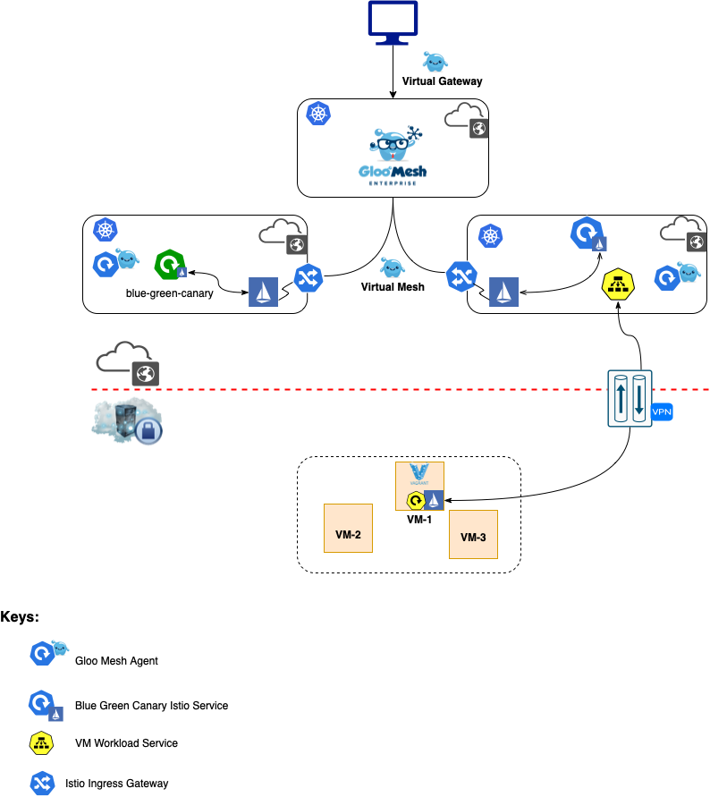
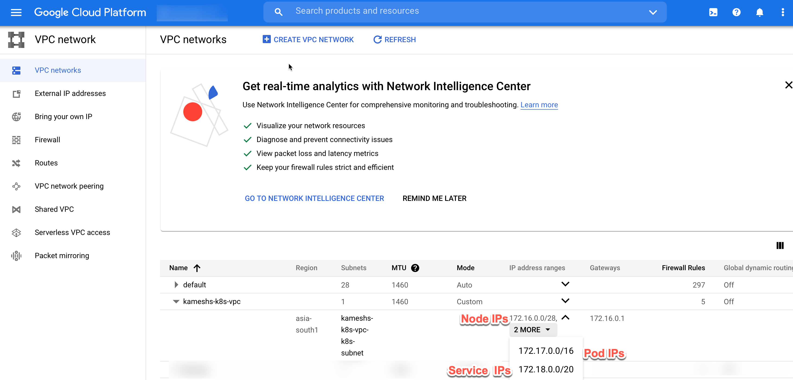
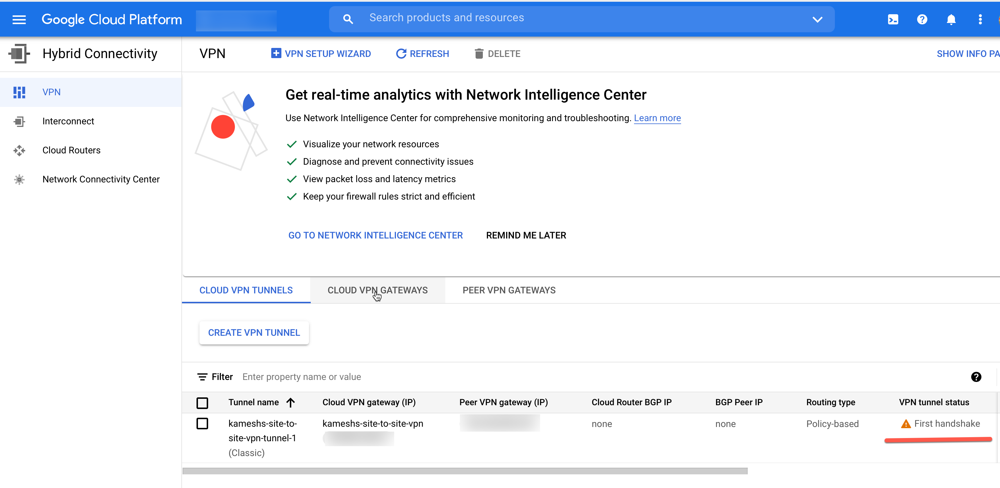
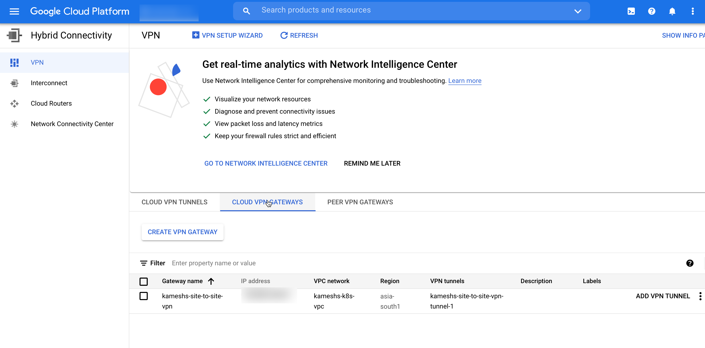
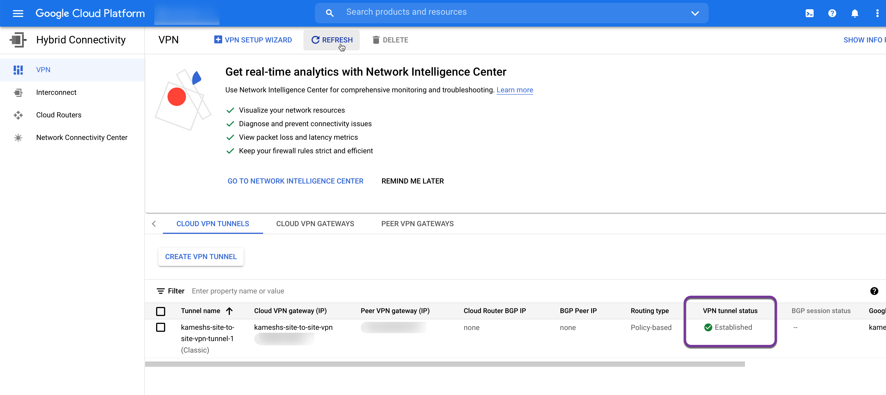
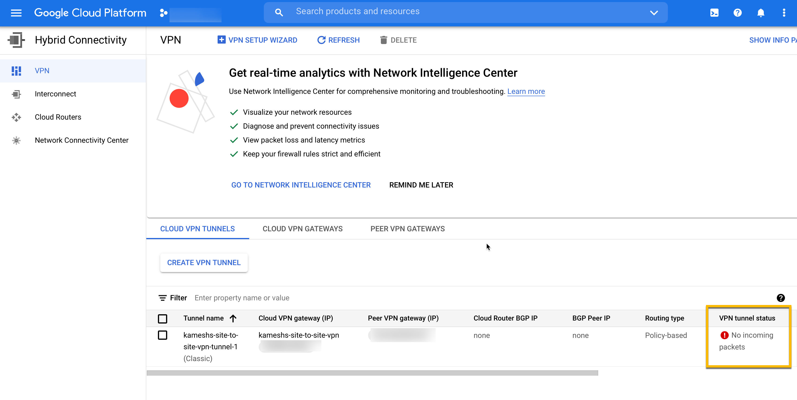

Site to Site VPN
One of the main goals of this demo is to integrate VM on-premise with public cloud using Istio. To be able to integrate the VM with Istio on the cloud we need to have networking done between public cloud and on-premise. There are many ways to do setup the networking for the demo sake we will have use site-to-site VPN on GCP.
Let’s take stock of our inventory,
- We have setup Kubernetes Clusters on AWS/Civo/GKE
- Installed Istio on to AWS/GKE clusters
- A linux VM provisioned via Vagrant.
At the end of this chapter we would have,
- Created site-site VPN tunnel between GCP and your home network
- Configured VM with IpSec service to tunnel traffic
Demo Architecture¶

Create VPN Resources¶
Important
It is highly recommended that you have static IP that will connect your Home network to GCP. Dynamic IP will work but then it might require to VPN re-run the configuration every time the IP changes.
When we set the GKE we created the VPC and used it while setting up the GKE as a VPC-native cluster.
IP Plan¶
The following section shows the IP plan of the GKE ,
-
VPC Network CIDR - 172.16.0.0/12
-
Subnet Primary Address Range (Nodes) - 172.16.0.0/28
Address: 172.16.0.0 10101100.00010000.00000000.0000 0000
Netmask: 255.255.255.240 = 28 11111111.11111111.11111111.1111 0000
Wildcard: 0.0.0.15 00000000.00000000.00000000.0000 1111
=>
Network: 172.16.0.0/28 10101100.00010000.00000000.0000 0000
HostMin: 172.16.0.1 10101100.00010000.00000000.0000 0001
HostMax: 172.16.0.14 10101100.00010000.00000000.0000 1110
Broadcast: 172.16.0.15 10101100.00010000.00000000.0000 1111
Hosts/Net: 14 Class B, Private Internet
- Subnet Secondary Address Range (Pods) - 172.17.0.0/16
Address: 172.17.0.0 10101100.00010001. 00000000.00000000
Netmask: 255.255.0.0 = 16 11111111.11111111. 00000000.00000000
Wildcard: 0.0.255.255 00000000.00000000. 11111111.11111111
=>
Network: 172.17.0.0/16 10101100.00010001. 00000000.00000000
HostMin: 172.17.0.1 10101100.00010001. 00000000.00000001
HostMax: 172.17.255.254 10101100.00010001. 11111111.11111110
Broadcast: 172.17.255.255 10101100.00010001. 11111111.11111111
Hosts/Net: 65534 Class B, Private Internet
- Subnet Secondary Address Range (Services) - 172.18.0.0/20
Address: 172.18.0.0 10101100.00010010.0000 0000.00000000
Netmask: 255.255.240.0 = 20 11111111.11111111.1111 0000.00000000
Wildcard: 0.0.15.255 00000000.00000000.0000 1111.11111111
=>
Network: 172.18.0.0/20 10101100.00010010.0000 0000.00000000
HostMin: 172.18.0.1 10101100.00010010.0000 0000.00000001
HostMax: 172.18.15.254 10101100.00010010.0000 1111.11111110
Broadcast: 172.18.15.255 10101100.00010010.0000 1111.11111111
Hosts/Net: 4094 Class B, Private Internet

Running the following command will create the VPN on GCP and configure the site-to-site VPN using strongswan using IPSec.
make create-tunnel
The successful Gateway and Tunnel creation should show the following resources in the GCP console,
- Cloud VPN Tunnel
Cloud VPN Tunnel creates a VPN tunnel between your on-premise(home) network and Google Cloud. As you notice the tunnel’s status is First handshake as we are yet to initate the connection from your VM which we will be doing in the next section.

- VPN Gateway
The VPN gateway helps routing the VPN traffic from our on-premise network into Google Cloud,

Connect VM to Google Cloud¶
The setup done in the previous step would have enabled the strongswan systemd service on the vm let us check the status of the same,
Open a new terminal and ssh into the Vagrant vm
cd $TUTORIAL_HOME
All the commands in this chapter will be executed inside the VM, so lets SSH into it,
vagrant ssh
IPSec Service¶
The make create-tunnel command would have enabled and started a systemd service called strongswan.
Run the following command to check the status of the strongswan service,
sudo systemctl status strongswan
● strongswan.service - strongSwan IPsec IKEv1/IKEv2 daemon using swanctl
Loaded: loaded (/lib/systemd/system/strongswan.service; enabled; vendor preset: enabled)
Active: active (running) since Fri 2021-10-01 13:26:48 UTC; 2s ago
Process: 63691 ExecStartPost=/usr/sbin/swanctl --load-all --noprompt (code=exited, status=0/SUCCESS)
Main PID: 63658 (charon-systemd)
Status: "charon-systemd running, strongSwan 5.8.2, Linux 5.4.0-88-generic, x86_64"
Tasks: 17 (limit: 4682)
Memory: 3.1M
CGroup: /system.slice/strongswan.service
└─63658 /usr/sbin/charon-systemd
Oct 01 13:26:50 ubuntu-focal charon-systemd[63658]: selected peer config 'gw-gw'
Oct 01 13:26:50 ubuntu-focal charon-systemd[63658]: authentication of 'xx.xxx.xx.xxx' with pre-shared key successful
Oct 01 13:26:50 ubuntu-focal charon-systemd[63658]: authentication of 'xx.xx.xxx.xx' (myself) with pre-shared key
Oct 01 13:26:50 ubuntu-focal charon-systemd[63658]: IKE_SA gw-gw[3] established between 192.168.68.119[xx.xx.xxx.xx]...xx.xxx.xx.xxx[xx.xxx.xx.xxx]
Oct 01 13:26:50 ubuntu-focal charon-systemd[63658]: scheduling reauthentication in 10593s
Oct 01 13:26:50 ubuntu-focal charon-systemd[63658]: maximum IKE_SA lifetime 11673s
Oct 01 13:26:50 ubuntu-focal charon-systemd[63658]: selected proposal: ESP:AES_GCM_16_256/NO_EXT_SEQ
Oct 01 13:26:50 ubuntu-focal charon-systemd[63658]: CHILD_SA home-gcp{2} established with SPIs ceb36c53_i c82d0bb7_o and TS 192.168.0.0/16 === 172.16.0.0/28 172.>
Oct 01 13:26:50 ubuntu-focal charon-systemd[63658]: generating IKE_AUTH response 1 [ IDr AUTH SA TSi TSr N(AUTH_LFT) ]
Oct 01 13:26:50 ubuntu-focal charon-systemd[63658]: sending packet: from 192.168.68.119[4500] to xx.xxx.xx.xxx[4500] (269 bytes)
The service status shows the connection has been successfully loaded, but not established yet.
IPSec Service Configuration¶
The strongswan IPSec tunnel connection configuration done using the file /etc/swanctl/conf.d/gcp-gloo-demos.conf. For more details about the configuration please check the strongswan docs.
connections {
gw-gw {
local_addrs = 192.168.68.119
remote_addrs = xx.xxx.xxx.xxx
local {
auth = psk
}
remote {
auth = psk
}
children {
home-gcp {
local_ts = 192.168.0.0/16
remote_ts = 172.16.0.0/28,172.17.0.0/16,172.18.0.0/20
rekey_time = 5400
rekey_bytes = 500000000
rekey_packets = 1000000
esp_proposals = aes256gcm16-sha512-modp8192
start_action = start
dpd_action = restart
}
}
version = 2
mobike = no
reauth_time = 10800
proposals = aes256gcm16-sha512-modp4096
}
}
secrets {
ike-1 {
id-1 = 192.168.68.119
id-2 = xx.xxx.xxx.xxx
secret = <Generated IPSec Secret>
}
}
Points to Ponder
-
The
remote_tsis mapped to the GKE k8s subnets that we had defined for Nodes, Pods and Service respectively. This will enable the VM to route the traffic to those subnets via the VPN gateway and VPN tunnel -
Its very important to have the Cipher1 proposals and esp_proposals inline with whats supported by GCP IKE Ciphers2.
-
Check the names
connections→ gw-gw ,children→ home-gcp and IKEV23secret→ ike-1 from thegcp-gloo-demos.confconfiguration to their statuses from thestrongswanservice logs. For more detailed logs usesudo journalctl -xe -u strongswan
Check Status¶
The status of tunnel can be checked on the VM using the swanctl utility,
sudo swantctl --list-sas
The command above lists the SA as shown,
vagrant@ubuntu-focal:~$ sudo swanctl --list-sas
gw-gw: #3, ESTABLISHED, IKEv2, 63c3d5bc28f7d6eb_i a80e425a5246e759_r*
local 'xx.xxx.xx.xx' @ 192.168.68.119[4500]
remote 'xx.xxx.xx.xx' @ xx.xxx.xx.xx[4500]
AES_GCM_16-256/PRF_HMAC_SHA2_512/MODP_4096
established 194s ago, reauth in 9809s
home-gcp: #2, reqid 1, INSTALLED, TUNNEL-in-UDP, ESP:AES_GCM_16-256
installed 194s ago, rekeying in 4814s, expires in 5746s
in c23db81e, 1205 bytes, 6 packets, 119s ago
out b4a96c26, 531 bytes, 8 packets, 119s ago
local 192.168.0.0/16
remote 172.16.0.0/28 172.17.0.0/16 172.18.0.0/20
When checking the Google Cloud Console it should show the VPN Tunnel status as Established,

Check Connectivity¶
Let us check the connections between GKE and VM,
kubectl --context=gke apply -f $TUTORIAL_HOME/extras/checks-and-tests.yaml
Ping from the pod,
kubectl --context=gke exec -it $(kubectl --context=gke get pods -lapp=network-utils -ojsonpath='{.items[*].metadata.name}') -- ping <your VM public ip>
The ping should successfull with the output like,
# e.g kubectl --context=gke exec -it $(kubectl --context=gke get pods -lapp=network-utils -ojsonpath='{.items[*].metadata.name}') -- ping 192.168.68.119
PING 192.168.68.119 (192.168.68.119) 56(84) bytes of data.
64 bytes from 192.168.68.119: icmp_seq=1 ttl=62 time=32.6 ms
64 bytes from 192.168.68.119: icmp_seq=2 ttl=62 time=34.4 ms
64 bytes from 192.168.68.119: icmp_seq=3 ttl=62 time=117 ms
If tunnel was established successfully the following curl should return an HTML response as shown,
curl $(kubectl --context=gke get pods -lapp=nginx -ojsonpath='{.items[*].status.podIP}')
<!DOCTYPE html>
<html>
<head>
<title>Welcome to nginx!</title>
<style>
html { color-scheme: light dark; }
body { width: 35em; margin: 0 auto;
font-family: Tahoma, Verdana, Arial, sans-serif; }
</style>
</head>
<body>
<h1>Welcome to nginx!</h1>
<p>If you see this page, the nginx web server is successfully installed and
working. Further configuration is required.</p>
<p>For online documentation and support please refer to
<a href="http://nginx.org/">nginx.org</a>.<br/>
Commercial support is available at
<a href="http://nginx.com/">nginx.com</a>.</p>
<p><em>Thank you for using nginx.</em></p>
</body>
</html>
When Tunnel is inactive

The VPN tunnel goes inactive if there is no activity for sometime, whenever you see the Tunnel is inactive say you are not able to ping the Pods, try restarting the strongswan service and initiate the connection,
vagrant ssh -c "sudo systemctl restart strongswan"